기계가공조립기능사 (2005-01-30 기출문제)
1과목: 기계가공법 및 안전관리
1. 연삭 숫돌 바퀴를 나무 해머로 때려 검사한 결과, 탁한소리가 나는 것은?
- 완전한 숫돌바퀴
- 균열이 생긴 숫돌 바퀴
- 두께가 두꺼운 숫돌 바퀴
- 두께가 얇은 숫돌 바퀴
(정답률: 81%)

2. 밀링작업에서 보안경을 착용하는 가장 큰 이유는?
- 커터가 부러져 튀기 때문
- 주유가 비산하기 때문
- 공작물이 튈 염려가 있기 때문
- 칩의 비산이 있기 때문
(정답률: 90%)
3. 형판에 의해 턱붙이 부분, 테이퍼 및 곡면등을 가공하여 같은 모양, 치수의 제품을 다량 생산하기에 적합하도록 만든 공작기계는?
- 바이트 연삭용 양두 연삭기
- 수직 밀링 머신
- 모방 선반
- 만능 연삭기
(정답률: 59%)
4. 밀링 머신의 주요 구성 부분에 해당되지 않는 것은?
- 기둥(column)
- 니(knee)
- 에이프런(apron)
- 테이블(table)
(정답률: 73%)
5. 드릴 작업시 칩의 제거는 어떤 방법이 가장 안전한가?
- 회전을 중지시키고 솔로 제거한다.
- 회전을 시키면서 손으로 제거한다.
- 회전을 시키면서 솔로 제거한다.
- 회전을 중지시키고 손으로 제거한다.
(정답률: 93%)
6. 팁을 자루에 기계적으로 고정하며, 팁을 재 연삭하여 사용하는 것과 삼각형, 사각형 팁의 아래, 위 양면의 끝부분 날을 순차로 사용하는 것 등이 있는 선반 바이트는?
- 클램프 바이트
- 단체 바이트
- 경납땜 바이트
- 용접 바이트
(정답률: 70%)
7. 밀링 커터의 재료에 가장 적당한 것은?
- 솔바이트
- 초경 합금
- 산화 알루미늄
- 니켈
(정답률: 87%)
8. 수나사의 유효지름을 측정하는 데, 사용되는 공구가 아닌 것은?
- 나사마이크로 미터
- 삼선법
- 광선정반
- 공구 현미경
(정답률: 60%)
9. 수평 밀링머신 가공사항으로 틀린 것은?
- 가능한 한 공작물은 깊게 바이스에 고정시킨다.
- 하향 절삭시 뒤틈제거 장치를 반드시 풀어 놓는다.
- 커터는 나무등 연질재료로 받쳐 놓는다.
- 반드시 보호 안경을 착용하며 장갑은 끼지 않는다.
(정답률: 72%)
10. 공작기계에서 스핀들의 속도변환은 보통 어떤 방법에 의한 전동인가?
- 마찰차에 의한 전동
- 캠에 의한 전동
- 기어에 의한 전동
- 링크에 의한 전동
(정답률: 69%)
11. 센터리스 연삭기의 특징으로 옳은 것은?
- 긴 홈이 있는 일감도 연삭이 가능하다.
- 대량 생산에 부적합하다.
- 대형 중량물도 연삭할 수 있다.
- 센터나 척을 사용하지 않는다.
(정답률: 59%)
12. 원통내면의 정밀도를 더욱 높이기 위하여 막대모양의 가는 입자의 숫돌을 방사상으로 배치한 공구로 다듬질하는 방법을 무엇이라 하는가?
- 수퍼피니싱
- 호닝
- 래핑
- 입자벨트가공
(정답률: 46%)
13. 블록게이지의 종류에 속하지 않는 것은?
- 요한슨(Johansson)형
- 호크(hoke)형
- 캐리(cary)형
- 하이트(height)형
(정답률: 50%)
14. 연삭 숫돌 바퀴의 3요소에 속하지 않는 것은?
- 숫돌 입자
- 결합도
- 기공
- 결합제
(정답률: 74%)
15. 일감을 부식액속에 넣고 화학반응을 일으켜 일감표면에서 여러 가지 형상으로 파내거나 잘라내는 가공법은?
- 초음파가공
- 플라즈마가공
- 레이져가공
- 화학적가공
(정답률: 79%)
16. KS규격 안전색 중 파랑의 표지 의미 및 목적은?
- 지시 표지
- 금지 표지
- 주의 표지
- 안전 표지
(정답률: 73%)
17. 선삭에서 노우즈 반경 1.5mm의 둥근끝 검바이트를 사용하여 0.018mm로 다듬질 절삭을 할려고 할 때, 적당한 이송의 이론값은?
- 약 0.13mm/rev
- 약 0.46mm/rev
- 약 0.74mm/rev
- 약 0.03mm/rev
(정답률: 39%)
18. 드릴에서 곧은 자루는 지름이 몇 ㎜ 이하인가?
- 13
- 18
- 24
- 30
(정답률: 59%)
19. 초경합금 바이트를 사용하여 지름 100㎜, 길이 200㎜인 연강을 157m/min의 절삭속도로 가공할 때 공작물의 회전수는 다음 중 얼마인가?
- 250 rpm
- 500 rpm
- 750 rpm
- 1000 rpm
(정답률: 57%)
20. 잇수를 Z, 모듈을 M이라고 할때, 기어소재의 바깥지름은?
- Z ×M
- (M+2)Z
- (Z+2)M
- Z/M+1
(정답률: 41%)
2과목: 기계재료 및 요소
21. 공작물을 고정시켜 놓고 주축의 위치를 수평으로 이동하여 구멍의 중심을 맞추어 작업할 수 있는 드릴링머신은?
- 레이디얼 드릴링머신
- 다축 드릴링머신
- 직립 드릴링머신
- 다두 드릴링머신
(정답률: 62%)
22. CNC 공작 기계의 보조 기능(M) 설명 중 틀린 것은?
- M 코드의 명령절에서 2개 이상 명령시 처음 명령한 것이 유효하다.
- M 뒤의 2자리를 붙여서 사용한다.
- M 코드는 1개의 명령절에서 1개만 유효하다.
- M 01 코드의 의미는 선택적 정지를 나타낸다.
(정답률: 54%)
23. 주축 끝 나사부에 고정하여 주축의 회전을 공작물에 전달하는 부속품은?
- 척
- 돌림판
- 센터
- 맨드릴
(정답률: 42%)
24. 선반의 안전작업에 대한 설명으로 틀린 것은?
- 시동전에 심압대가 잘 죄어져 있는가를 확인한다.
- 치수를 측정할 때에는 먼저 기계의 회전을 멈추고 측정한다.
- 보링 작업을 할 때 구멍안을 손가락으로 청소하지 않는다.
- 공구가 많을 때에는 선반의 베드를 공구대 대신으로 사용한다.
(정답률: 90%)
25. 가늘고 긴 일감이 절삭력과 자중에 의해 휘거나 처짐이 일어나는 것을 방지하기 위한 부속 장치는?
- 방진구
- 맨드릴
- 면판
- 돌리개
(정답률: 78%)
26. 드릴작업시 주의할 점으로 틀린 것은?
- 작업복과 작업모를 착용한다.
- 칩은 기계를 정지시킨 다음 브러시로 제거한다.
- 드릴작업시에는 보호안경을 쓴다.
- 작은 공작물은 직접 손으로 잡고 작업을 한다.
(정답률: 92%)
27. 연삭숫돌에서, 점토와 장석을 주성분으로 하여 약 1300℃에서 구워서 굳힌 숫돌바퀴는?
- 탄성 숫돌바퀴
- 금속질 숫돌바퀴
- 실리케이트 숫돌바퀴
- 비트리파이드 숫돌바퀴
(정답률: 57%)
28. 연삭숫돌 바퀴의 수정에서 일감의 영향으로 숫돌 바퀴의 모양이 변하므로, 이것을 정확한 모양으로 깎는 작업은?
- 눈메움(loading)
- 트루잉(truing)
- 세이빙(shaving)
- 무딤(glazing)
(정답률: 65%)
29. 측정기기 중 삼각법을 이용하여 각도의 측정이나 기울기를 정밀하게 측정하는 것은?
- 공구현미경
- 사인바
- 정밀수준기
- 공기 마이크로미터
(정답률: 73%)
30. 측정에서 우연오차를 없애는 최선의 방법은?
- 여러번 측정하여 평균값을 구한다.
- 측정기 자체의 오차를 없게 한다.
- 개인 오차를 없게 한다.
- 측정기를 아베의 원리에 어긋나게 제작한다.
(정답률: 71%)
31. 연삭 작업 중 거친 입도의 숫돌 사용을 사용해야 하는 것은?
- 다듬연삭 및 공구 연삭
- 숫돌과 일감의 접촉 면적이 작을 때
- 절삭 깊이와 이송을 많이 줄 때
- 경도가 높고 메진 재료의 연삭
(정답률: 37%)
32. 밀링 가공에서 떨림에 의한 직접적인 영향이 아닌 것은?
- 전기장치의 고장을 가져온다.
- 밀링커터의 수명을 단축 시킨다.
- 생산능률을 저하시킨다.
- 가공면을 거칠게 한다.
(정답률: 78%)
33. 절삭 가공에서 매우 짧은 시간에 발생, 성장, 분열, 탈락의 주기를 반복하는 현상을 무엇이라고 하는가?
- 경사면(crater) 마멸
- 빌트업 에지(built-up edge)
- 여유면(flank) 마멸
- 절삭속도(cutting speed)
(정답률: 84%)
34. 나사 측정법에 해당하는 측정기는?
- 사인바
- 공기 마이크로미터
- 공구 현미경
- 하이트 마이크로미터
(정답률: 59%)
35. 지름이 10[mm]인 드릴로 두께 45[mm]의 강판에 구멍을 뚫으려고 한다. 드릴이 1회전하는 동안의 이송을 0.02[mm], 회전수를 480[rpm]으로 한다면 구멍을 뚫는 데 걸리는 시간은? ( 단, 드릴 끝 원추부의 높이는 3[mm]이다. )
- 3분
- 5분
- 7분
- 9분
(정답률: 52%)
36. 파이프의 연결에서 신축이음을 하는 것은 온도변화에 의해 파이프내부에 생기는 무엇을 방지하기 위해서인가?
- 열응력
- 전단응력
- 응력집중
- 피로
(정답률: 61%)
37. 금속의 상 변태 중 동소변태에 대한 설명으로 맞는 것은?
- 한 결정구조에서 일어나는 상의 변화가 아닌 단순한 에너지적인 변화이다.
- 동일 원소의 두 고체로서 원자 배열의 변화에 따라 서로 다른 상태로 존재한다
- 금속을 가열하면 일정한 온도 이상에서 자성을 잃지 않고 상자성체로 자성이 변한다.
- 철(Fe), 코발트(Co), 니켈(Ni) 같은 금속에서 잘 일어난다.
(정답률: 47%)
38. 다음 중 키의 전달 토크의 크기에서 가장 큰 것은?(오류 신고가 접수된 문제입니다. 반드시 정답과 해설을 확인하시기 바랍니다.)
- 안장 키
- 평 키
- 묻힘 키
- 접선 키
(정답률: 36%)
39. 고온의 오스테나이트 영역에서 탄소강을 냉각하면 냉각속도의 차이에 따라 여러 조직으로 변태되는데, 이들 조직의 강도와 경도를 큰 순서대로 바르게 나열한 것은?
- 마텐자이트＞펄라이트＞소르바이트＞트루스타이트
- 마텐자이트＞트루스타이트＞펄라이트＞소르바이트
- 트루스타이트＞마텐자이트＞소르바이트＞펄라이트
- 마텐자이트＞트루스타이트＞소르바이트＞펄라이트
(정답률: 56%)
40. 다음 중 강의 표면 경화법이 아닌 것은?
- 담금질
- 침탄법
- 질화법
- 화염 경화법
(정답률: 52%)
3과목: 기계제도(절삭부분)
41. 베어링 번호가 6201인 레이디얼 볼 베어링의 안지름은 얼마인가?
- 10mm
- 12mm
- 15mm
- 17mm
(정답률: 61%)
42. 황동에 대한 기계적 성질과 물리적 성질을 설명한 것 중에서 잘못된 것은?(오류 신고가 접수된 문제입니다. 반드시 정답과 해설을 확인하시기 바랍니다.)
- 30% Zn 부근에서 최대의 연신율을 나타낸다.
- 45% Zn 에서 인장강도가 최대로 된다.
- 50% Zn 이상의 황동은 취약하여 구조용재에는 부적합하다.
- 전도도는 50% Zn에서 최소가 된다.
(정답률: 44%)
43. 다음 중 청동에 Sn 8∼12%, Zn 1∼2%을 함유한 내식성이 우수한 합금은?
- 포금
- 인청동
- 연청동
- 켈밋
(정답률: 49%)
44. 직선 운동을 회전 운동으로 변환하거나, 회전 운동을 직선 운동으로 변환하는데 사용되는 기어는?
- 스퍼 기어(spur gear)
- 헬리컬 기어(helical gear)
- 베벨 기어(bevel gear)
- 래크와 피니언(rack and pinion)
(정답률: 55%)
45. 힘의 크기와 방향이 동시에 주기적으로 변하는 하중은?
- 반복 하중
- 교번 하중
- 충격 하중
- 정하중
(정답률: 74%)
46. 기어, 풀리, 커플링 등의 회전체를 축에 고정시켜서 회전운동을 전달시키는 기계요소는?
- 나사
- 리벳
- 핀
- 키
(정답률: 57%)
47. 주철의 경우 인장강도와 전단강도는 그 크기가 비슷하여 인장응력이 극한강도를 넘어서면 축선 직각단면에서 파단이 일어나지만 압축강도는 인장강도나 전단강도보다 훨씬 크므로 축선과 몇 도의 각도로 파괴되는가?
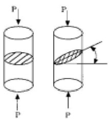
- 30°
- 45°
- 60°
- 75°
(정답률: 61%)
48. 물체에 하중을 작용시키면 물체 내부에는 하중에 대응하는 저항력이 발생한다. 이 저항력을 무엇이라 하는가?
- 응력(stress)
- 변형률(strain)
- 프와송의 비(Posson's ratio)
- 탄성(elasticity)
(정답률: 77%)
49. 주철의 특성이 아닌 것은?
- 주조성이 우수하다.
- 복잡한 형상을 생산할 수 있다.
- 주물제품을 값싸게 생산 할 수 있다.
- 강에 비해 강도가 비교적 높다.
(정답률: 60%)
50. 다음 중 형상 기억 효과를 나타내는 합금은?
- Ti-Ni
- Fe-Al
- Ni-Cr
- Pb-Sb
(정답률: 56%)
51. 보기와 같은 표면의 결 도시기호 해독으로 틀린 것은?
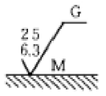
- G는 연삭 가공을 의미
- M은 커터의 줄무늬 방향기호
- 최대 높이 거칠기값은 25μm
- 거칠기 구분값의 하한은 6.3μm
(정답률: 41%)
52. 구멍이
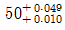
이고,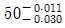
축이 일 때 최대 틈새는?- 0.020
- 0.040
- 0.⑤0
- 0.079
(정답률: 79%)
53. 보기 도면에서 ⓐ부분에 표시되어야 할 기하공차의 기호로 가장 적합한 것은?
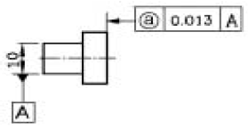
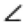
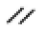
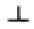
(정답률: 64%)
54. 보기 입체도의 제3각법 투상 도면으로 가장 적합한 것은?
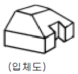
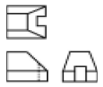
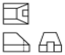
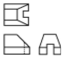
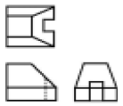
(정답률: 76%)
55. 테이퍼 핀의 호칭 지름으로 가장 적합한 것은?
- 핀의 큰 쪽의 지름
- 핀의 작은 쪽의 지름
- 구멍의 작은 쪽의 지름
- 핀의 큰 쪽과 작은 쪽의 평균지름
(정답률: 62%)
56. 다음 투상도법 중 제 1각법과 제 3각법이 속하는 투상도법은?
- 정투상법
- 등각 투상법
- 사투상법
- 부등각 투상법
(정답률: 72%)
57. 보기 입체도에서 화살표 방향이 정면일 경우 평면도로 가장 적합한 것은?
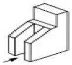
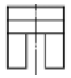
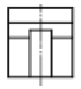
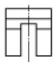
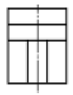
(정답률: 69%)
58. 실물길이가 100㎜인 형상을 1/2로 축척하여 제도한 경우 다음 설명 중 올바른 것은?
- 도면에 그려지는 길이는 50㎜이고, 치수기입은 100㎜로 기입되여 있다.
- 도면에 그려지는 길이는 100㎜이고, 치수기입은 50㎜로 기입되여 있다.
- 도면에 그려지는 길이는 50㎜이고, 치수기입은 50㎜로 기입되여 있다.
- 도면에 그려지는 길이는 100㎜이고, 치수기입은 100㎜로 기입되여 있다.
(정답률: 71%)
59. 보기의 입체도에서 화살표 방향이 정면도일 경우 평면도로 가장 적합한 것은?
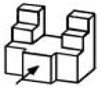
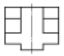
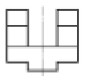
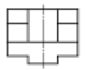
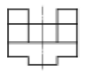
(정답률: 77%)
60. KS 나사 표시법에서 M6 x 1 로 표시된 경우 1 은 나사의 무엇을 나타낸 것인가?
- 피치
- 1인치당 나사 산수
- 등급
- 산의 높이
(정답률: 78%)